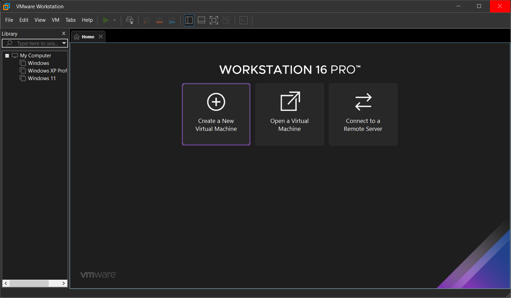
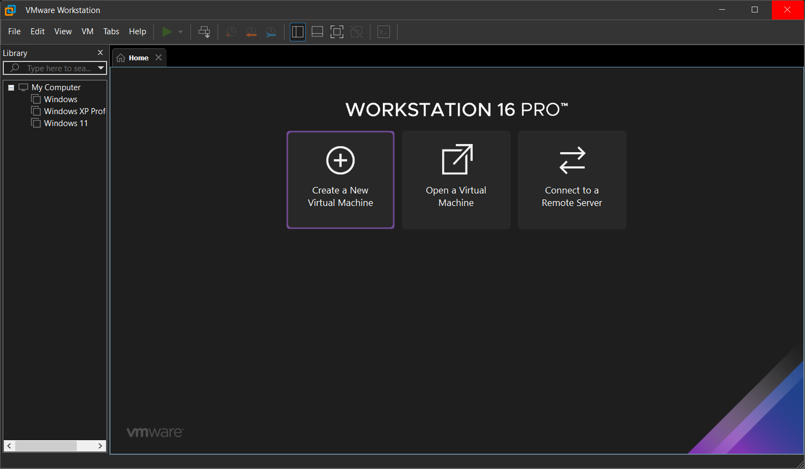

Keyboard bindings
Use < > arrows to navigate through songs (Click to simulate)
Details for idiots
< is to go to previous song on playlist (Click to simulate)
> is to go to next song on playlist (Click to simulate)
you better not be cuz Luke will go crazy😡
Use _ to play/pause music (Click to simulate)
Use P to see playlist (Click to simulate)
Use M to mute/unmute music (Click to simulate)
Use 0 to stop audio (Click to simulate)
Use S to see settings (Click to simulate)


 
